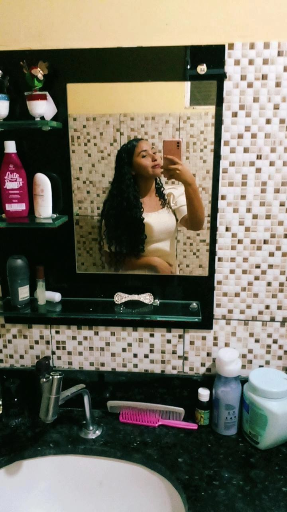
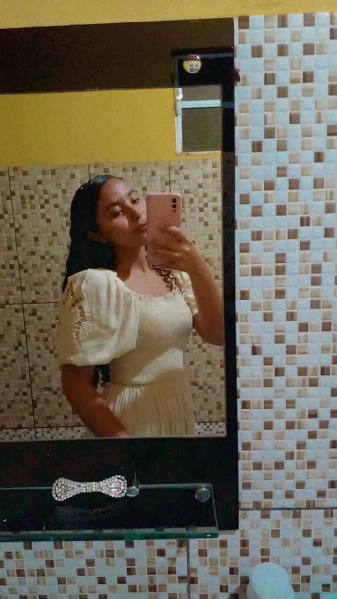
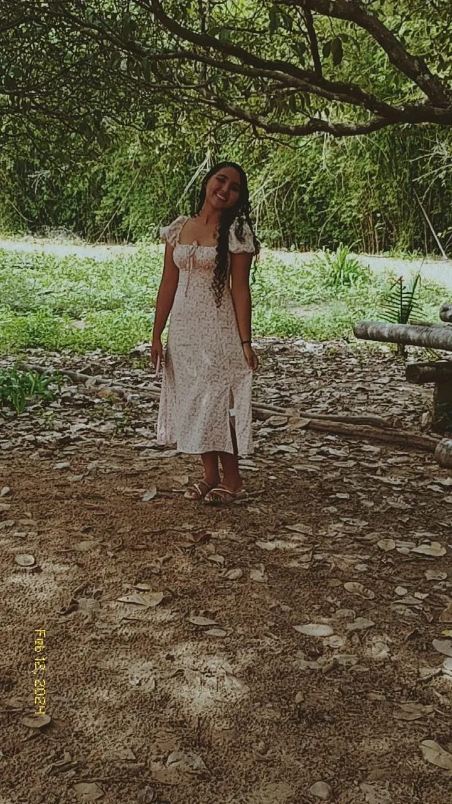
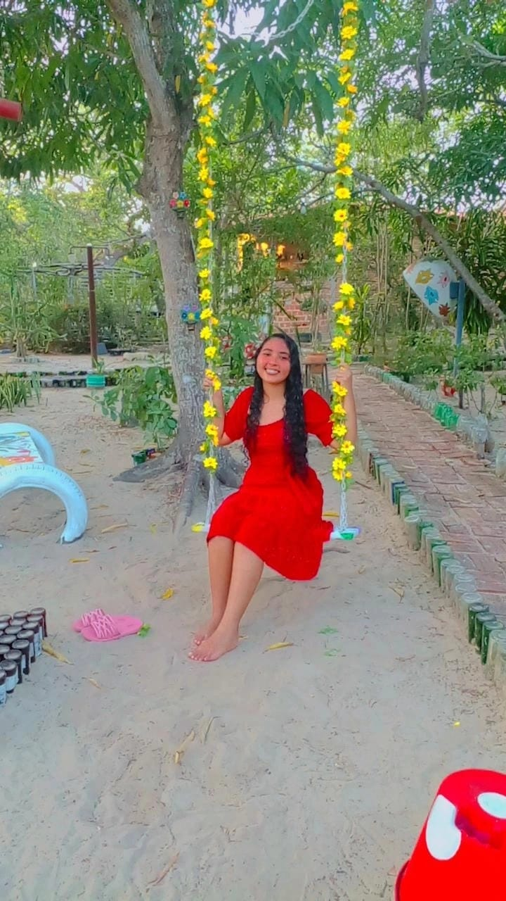
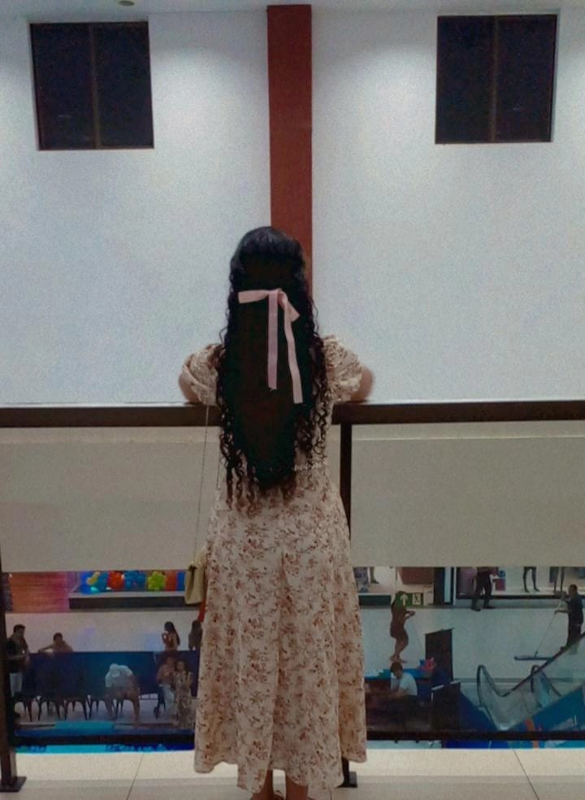

BOM O MEU AMOR POR VOCÊ COMEÇOU QUANDO EU ESTAVA INDO PRO SEGUNDO DIA DE AULA NA ESCOLA MOACYR,POIS NO PRIMEIRO DIA NÃO PUDE IR. NA EPOCA EU ERA EXTREMAMENTE GORDO,E EU SENTIA MUITA VERGONHA E ERA MUITO INSEGURO EM RELAÇÃO AO MEU CORPO. QUANDO EU CHEGUEI EU ESTAVA ATRASADO A PROFESSORA E TODOS OS ALUNOS JA ESTAVA NA SALA,E NAQUELE MOMENTO QUE EU PUS O PÉ DENTRO DA SALA TODOS ME OLHARAM COM NOJO,TODOS ME OLHARAM COMO SE EU FOSSE UMA DOENÇA EXTREMAMENTE CONTAGIOSA,E TUDO ISSO POR EU SER GORDO,E EU POR DENTRO SEGURANDO AS LÁGRIMAS OLHO PARA O LADO E VEJO A ÚNICA QUE ABRIU UM SORRISO TÃO LINDO E SINCERO,ME OLHOU COM UM BRILHO NO OLHO,EU NUNCA PENSEI QUE EU TERIA A OPORTUNIDADE DE ALGUEM OLHAR PARA MIM DAQUELE JEITO, ERA VOCÊ MELISSA,E A PARTIR DAQUELE MOMENTO EU ME APAIXONEI POR VOÇÊ. E A PARTIR DESSE MOMENTO NOSSA HISTÓRIA COMEÇOU,UMA HISTÓRIA QUE CONTA UM ROMANCE DE CRIANÇAS,JA FAZEM 8 ANOS ISSO,MAS PRA MIM PARECE QUE FOI ONTEM.
SABE É BEM INCRÍVEL LEMBRAR DISSO,POR QUÊ DUAS CRIANÇAS QUE NÃO SABIAM PRATICAMENTE NADA SOBRE A VIDA VIVERAM ALGO TÃO INTENSO! BOM O TEMPO SE PASSOU E FICAMOS MAIS PRÓXIMOS UM DO OUTRO,FOI QUANDO EU DECIDI ENGOLIR MEUS MEDOS E MINHAS INSEGURANÇAS E IR TE PEDIR EM NAMORO,EU SENTIA QUE VOÇÊ ERA A PESSOA CERTA,MAS FOI AÍ QUE EU TIVE MEU CORAÇÃO DESTROÇADO POR VOÇÊ,EU TE PEDI EM NAMORO E VOÇÊ DISSE QUE NÃO PODIA POR QUÊ EU NÃO ERA CRENTE E POR VOÇÊ ESTAR COM MEDO DE SUA MÃE BRIGAR,EU FIQUEI EXTREMAMENTE MAL MAIS DE 1 ANO,TODA VEZ QUE EU OLHA PRA VOÇÊ A CICATRIZ ARDIA,NA ÉPOCA EU NÃO ENTENDIA OS SEUS MOTIVOS,MAS TAMBÉM É COMPLICADO VOÇÊ PEDIR PRA UMA CRIANÇA DE 12 ANOS ENTENDER UMA SITUAÇÃO COMO ESSA,DEPOIS DE UM TEMPO EU ENTENDI SEUS MOTIVOS E VOLTEI A FALAR COM VOÇÊ NORMALMENTE.
MAS FOI NA ÉPOCA QUE EU ENTREI FIRME EM UMA DIETA E CONSEGUI O CORPO QUE EU SEMPRE QUIS TER,E ISSO FOI MINHA PERDIÇÃO, POIS AQUELAS PESSOAS QUE ME ODIAVAM SE APROXIMARAM DE MIM COM OUTRAS INTENÇÕES,E MEUS OLHOS ENCHERAM DE LUXÚRIA E EU FIQUEI CEGO COM ESSA LUXÚRIA, POR QUÊ EM VEZ DE NEGAR AQUELES QUE ME NEGARAM, EU OS ACOLHI E ESQUECI DA PESSOA QUE SEMPRE QUIS ESTAR DO MEU LADO. A PARTIR DESSE MOMENTO COMEÇOU O SEU SOFRIMENTO, POIS EU FIZ MUITA BESTEIRA E ISSO TE MAGOAVA MUITO E EU NÃO ME IMPORTAVA POIS A LUXÚRIA ME EMPEDIA DE ABRIR MEUS OLHOS, E MESMO COM ISSO TUDO VOÇÊ NUNCA SAIU DO MEU LADO, E SEMPRE ME AJUDOU, EU ADMITO EU FUI UM IDIOTA POR NÃO PERCEBER QUE A MENINA QUE ME AMAVA ESTAVA SEMPRE ALI DO MEU LADO. E DEPOIS A GENTE SE AFASTOU POR CONTA QUE FOMOS PARA ESCOLAS DIFERENTES, MAS MESMO ASSIM A GENTE AINDA NOS FALAVA-MOS, E CHEGOU O MOMENTO EM QUE EU ESTAVA NOVAMENTE QUERENDO PEDIR VOÇÊ EM NAMORO, MAS VOÇÊ PEDIU PRA EU ACEITAR JESUS E EU NÃO QUERIA DE JEITO NENHUM E EU SEMPRE DIZIA QUE NUNCA ME TORNARIA EVANGÉLICO, E HOJE CÁ ESTOU EU, ACEITEI JESUS E ESSA FOI UMA DAS MELHORES DECISÕES DA MINHA VIDA, POIS EU NUNCA PENSEI QUE SERIA TÃO INCRIVEL SER CRISTÃO, E TODO DIA EU ME PERGUNTO COMO EU NÃO ACEITEI JESUS NA MINHA VIDA ANTES.
QUANDO VOÇÊ PEDIU PRA EU ACEITAR JESUS E IR PEDIR SEUS PAIS PRA GENTE NAMORAR FOI O MESMO NO MOMENTO EM QUE EU CONHECI A MINHA EX, E FOI NESSE MOMENTO QUE EU FIZ A PIOR ESCOLHA DA MINHA VIDA, POIS VOÇÊ ESTAVA MEIO QUE EXIGINDO QUE EU ACEITASSE JESUS E ELA NÃO ESTAVA ME EXIGINDO NADA,EU SEMPRE SEGUI OS CONSELHOS DA MINHA MÃE,ELA ME ALERTOU PARA NÃO SEGUIR HISTÓRIA COM MINHA EX, E FOI NESSE MOMENTO QUE EU FIQUEI CEGO NOVAMENTE E NÃO ESCUTEI OS CONCELHOS DA MINHA MÃE, EU TE MAGOEI NOVAMENTE E HOJE EU PAGUEI UM PREÇO BEM ALTO POR ESSAS DECISÕES ERRADAS.
EU TE FALEI UMA VEZ QUE VOÇÊ FOI MEU PRIMEIRO AMOR, E EU QUERO QUE SEJA O ÚNICO A PARTIR DE AGORA, EU ACHO QUE NUNCA É TARDE PRA SE ARREPENDER DOS ERROS, E POR ISSO EU TE PEÇO PERDÃO NOVAMENTE, EU JA PEDI PERDÃO 1 MILHÃO DE VEZES, E VOÇÊ JA ME PERDOOU, MAS HOJE EU TE PEÇO NOVAMENTE! SABE A PARTIR DO MOMENTO EM QUE EU ME DESVINCULEI DESSA DECISÃO ERRADA QUE EU FIZ, FOI A PRIMEIRA COISA QUE TOCOU NO MEU CORAÇÃO FOI, ACEITA JESUS QUE ELE É A CURA PRA TUDO, E EU TIVE VÁRIOS SONHOS RELACIONADOS A EU ACEITAR JESUS E BUSCAR REFÚGIO NELE. EU SEGUI O QUE ESTAVA NO MEU CORAÇÃO E EM MEUS SONHOS, E EU ESTOU VIVENDO UMA EXPERIÊCIA INEXPLICAVÉL QUE EU NÃO CONSIGO EXPRESSAR ELAS EM PALAVRAS, E HOJE EU SÓ TENHO A AGRADECER A DEUS E A VOÇÊ TAMBÉM, MUITO OBRIGADO!!
VOCÊ SABE QUE EU SOU BOM COM PALAVRAS,ENTÃO EU ESPERO QUE COM ESSE POEMA EU TE DEIXE ENCANTADA. AS ESTRELAS SÃO LINDAS E BRILHAM NO ANOITECER, E ISSO SÓ ACONTECE PORQUE ELAS SE INSPIRAM EM VOCÊ.
EU SOU ENCANTADO PELO SEU OLHAR, POIS ELE ME TIROU DE UM MUNDO QUE ACHEI QUE EU NUNCA MAIS IRIA VOLTAR. AHHH ESCOLA,ESSA PALAVRA ME TRAZ LEMBRAMÇAS,POIS ME LEMBRA DA NOSSA PAIXÃO DE QUANDO ÉRAMOS CRIANÇAS.
MEL VOCÊ COMPLETA TODO O MEU SER,VOCÊ ME MOSTROU QUE COM O AMOR TUDO PODEMOS VENCER. EU LEMBRO DAQUELE PRIMEIRO DIA,ONDE EM UMA SALA CHEIO DE PRECONCEITUOSOS VOCÊ ERA A ÚNICA QUE OLHA PRA MIM E SORRIA E AINDA POR CIMA VIA BELEZA ONDE EU PENSAVA QUE EU NÃO TINHA.
VOCÊ ME AMOU ANTES MESMO DE ME CONHECER,E EU NÃO SOUBE ACEITAR ISSO E POR MUITO TEMPO TE FIZ SOFRER. MAS EU LEMBRO DO DIA EM QUE EU DISSE QUE NO FUTUTO EU FICARIA COM VOCÊ,E EU NÃO VOLTO ATRÁS COM A MINHA PALAVRA E COM VOCÊ EU QUERO VIVER.
EU ACHO INCRÍVEL QUANDO EU TENTO SER SÉRIO E SERENO,MAS QUANDO EU VEJO SEUS OLHINHOS EU ACABO ME DERRETENDO. SUA VOZ ME FASCINA,E EU JA DISSE VÁRIAS VEZES OLHA COMO CANTA ESSA MENINA! SE EU PUDESSE PASSARIA HORAS TE OUVINDO CANTAR,VOCÊ NÃO TEM NOÇÃO DO QUANTO ISSO IRIA ME ALEGRAR!
EU JA TE FALEI UMA VEZ QUE PRA MIM VOCÊ É UMA INSPIRAÇÃO,E TUDO QUE EU FALEI NESSE POEMA VEIO DO CORAÇÃO. MAS POR FAVOR NÃO SE ASSUSTE COM MINHAS EMOÇÕES, MAS EU QUERO QUE SAIBA QUE EU TE AMO MIL MILHÕES!!